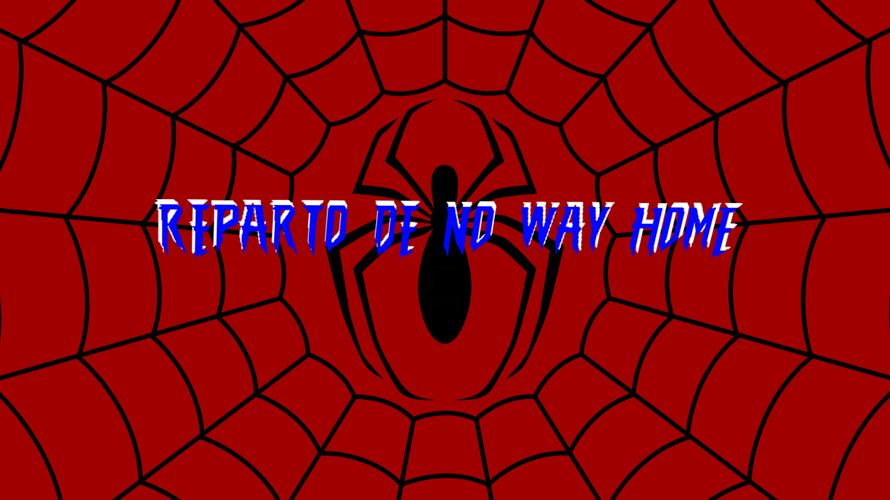
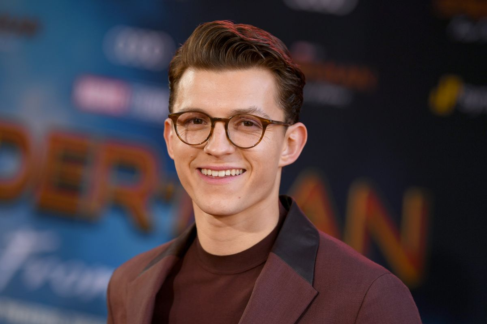
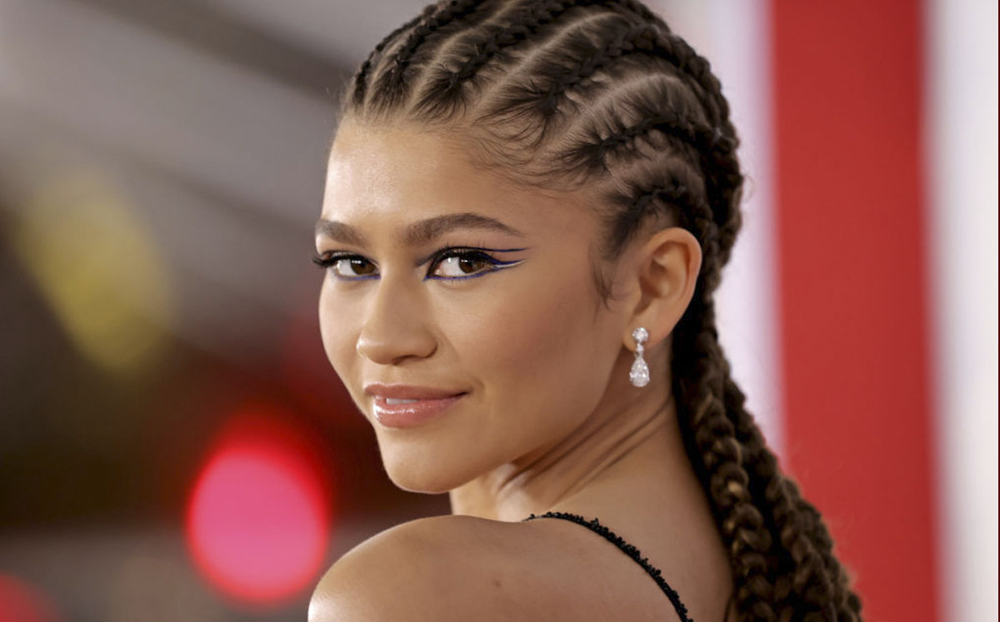
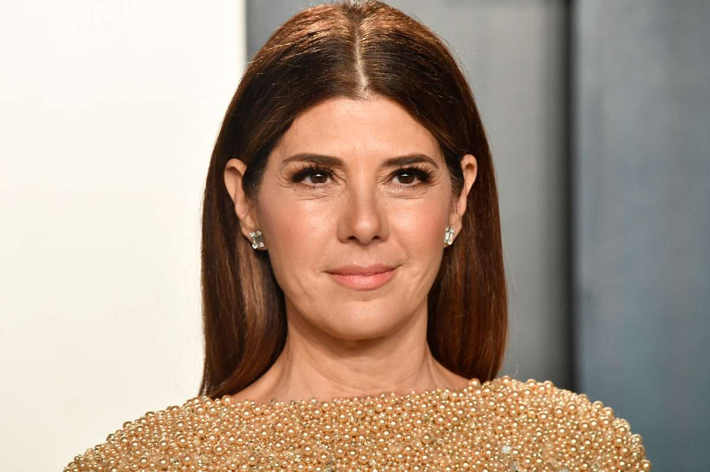

Spider-Man:
No Way Home

Reparto

Tom Holland es el centro de la pelicula siendo él quien le da vida a Spider-Man

Zendaya Maree: Ella es quien intepreta a Michelle Jones-Watson o abreviadamente como M.J
Benedicth Cumberbatch: Este aclamado actor interpreta a el mago que hace cambiar la realidad

Marisa Tomei: Ella es quien interpreta un importante papel ya que es simbolo maternal en la vida de Peter Parker